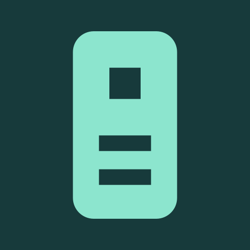
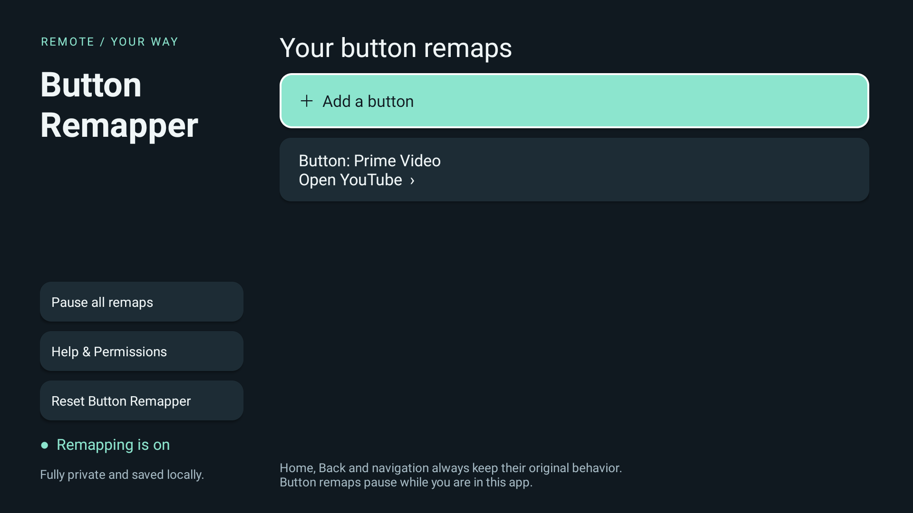
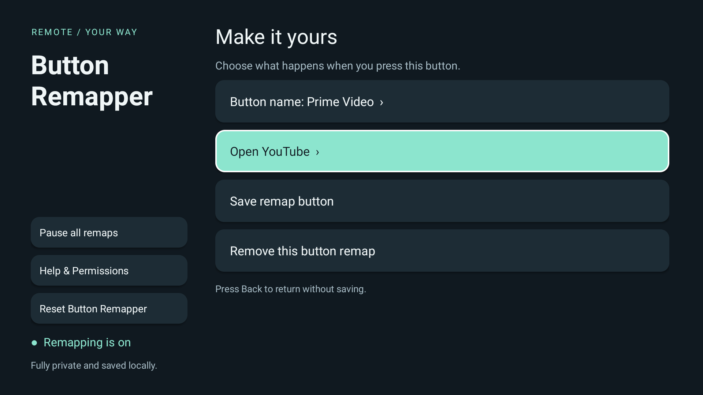
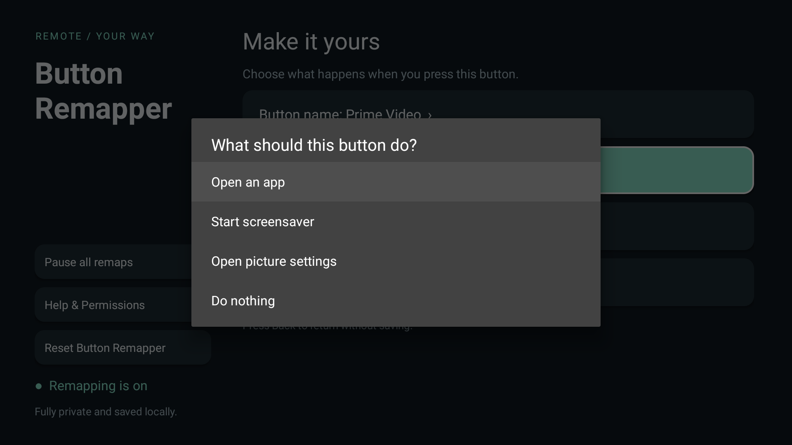
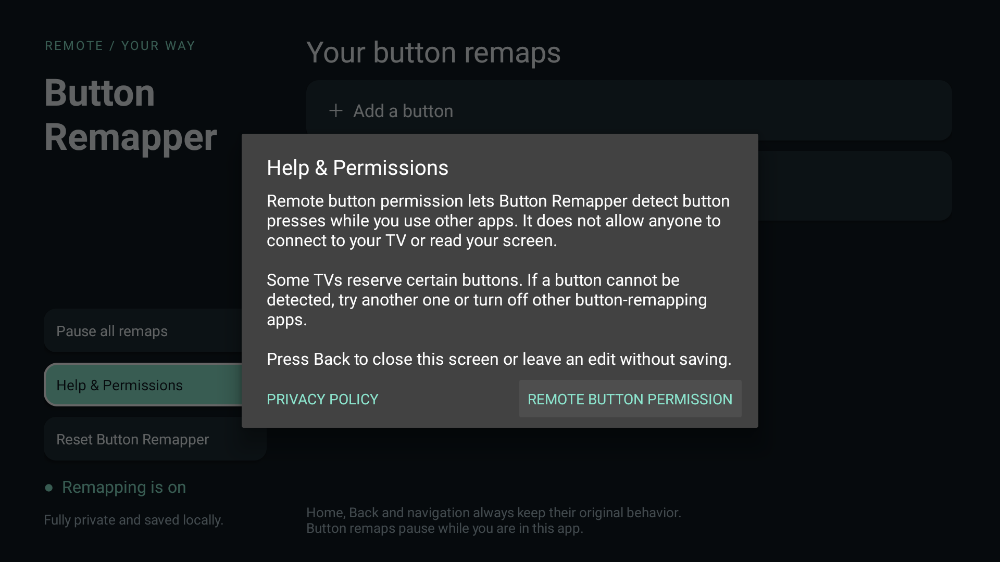

For Android TV & Google TV
Button Remapper
Give your remote buttons a new job.
Open a favorite app or an available TV action with a supported remote button. Your remaps stay saved on your TV, ready whenever you need them.
Get it onGoogle PlayAndroid 8.0 or later. Button and action availability depend on your TV.
A few clicks. A remote that suits you.
See the app on a real TV. Select any screenshot for a closer look.








Your settings stay on your TV.
No account, ads, analytics, or network permission. Button Remapper uses accessibility access to receive remote button events; it does not read screen content. Home, Back, and navigation keep their original behavior. Read the privacy policy.